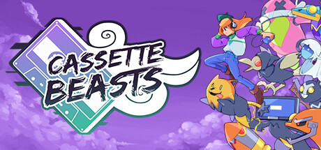
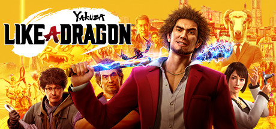

REVIEW PESSOAL · RPG
World of Final Fantasy: nostalgia com identidade própria
Uma aventura descontraída, com diferentes caminhos de evolução e protagonistas que precisam lidar com as consequências das próprias escolhas.
Ler a review →UM BLOG PESSOAL SOBRE GAMES
Às vezes baixo um jogo só porque está de graça. Aí ele me ganha pelos personagens, por uma mecânica diferente ou por uma história que continua na cabeça depois dos créditos.
Esse blog é meu caderno de reviews. Conto o que joguei, o que curti e também o que não funcionou tão bem.
Minha primeira review ↗
PRIMEIRA REVIEW · RPG INDIE Cassette BeastsLeia a história toda ↗Quero falar dos jogos como falaria com um amigo depois dos créditos: o que gostei, o que me surpreendeu e o que não funcionou tão bem.
RECÉM-SAÍDO DO MEU SAVE
REVIEW PESSOAL · RPG
Uma aventura descontraída, com diferentes caminhos de evolução e protagonistas que precisam lidar com as consequências das próprias escolhas.
Ler a review →REVIEW PESSOAL · SEM NOTA
Peguei o jogo de graça na Epic. Fiquei pelos sprites, pelas fusões e por um final que transforma a vitória numa despedida.
Ler a review →
REVIEW PESSOAL · RPG POR TURNOS
A troca da pancadaria por batalhas por turnos parecia arriscada. O carisma do grupo e o humor das habilidades fizeram a ideia dar certo.
Ler a review →MEU CANTO DE MONSTROS & HERÓIS
Curto jogos que fazem a gente se apegar à equipe. Pode ser montando um time de criaturas ou acompanhando uma turma de aventureiros.
As imagens vêm de outros sites. Se alguma não aparecer, confira sua conexão.
Pokémon: Pokédex oficial · Cloud: sprite catalogado no The Spriters Resource, com arte pixelada alternativa de jmart/Pixilart.
OUTRAS PRATELEIRAS